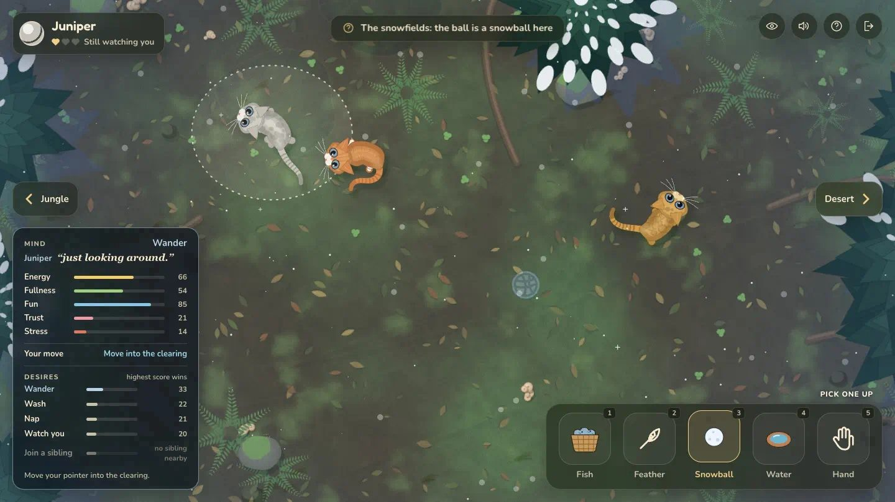
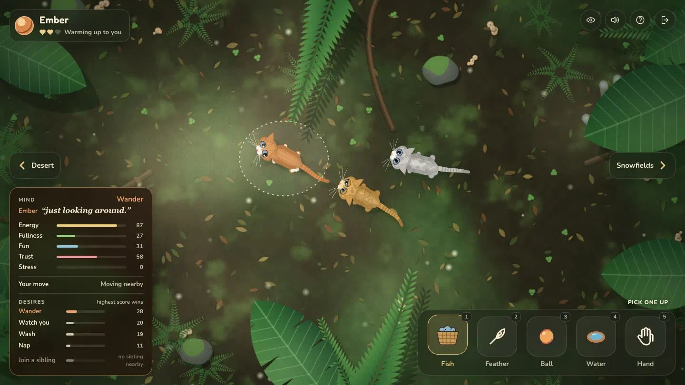
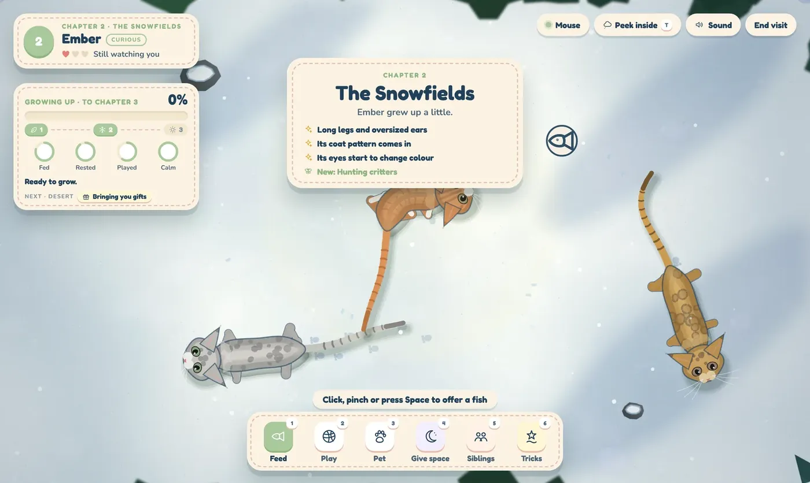
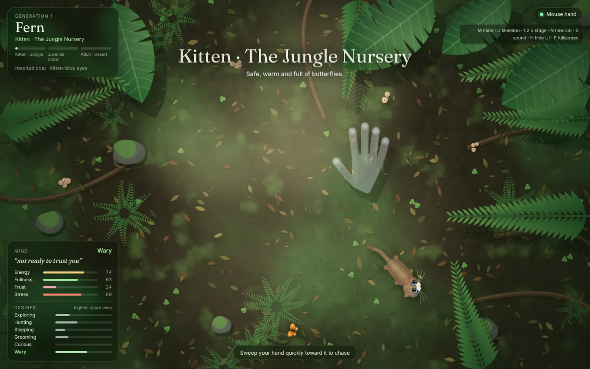

面向公共展览的可解释 AI 交互原型。伸手抚摸、喂食或逗玩三只小猫，也能看懂它们为什么接受或拒绝。An explainable AI interaction prototype for a public exhibition. Stroke, feed or play with three kittens, and see why they accept or refuse.
掌心落背即可抚摸；捏合对应点击。手、鼠标与触控共用同一套互动。以下短录屏来自当前构建，由脚本输入驱动。A palm on the back strokes; a pinch clicks. Hand, mouse and touch share the same interaction. These short clips use scripted input in the current build.

在无人引导、单次约 3–5 分钟的展厅体验中，追踪失败不能被理解成角色生气。我把输入可靠性与角色选择分开反馈。In an unattended exhibition visit of about 3–5 minutes, tracking failure should not look like an angry character. I separated input reliability from the kitten’s choice.
手被遮挡、出画或追踪跳变。反馈在手上：蓝色虚线，接触暂停。Hand occluded, out of frame or tracker jump. Feedback is on the hand: dashed blue, contact pauses.
TRACKING_LOST不影响角色与关系值No effect on character or bond
得分不足或与次高分过近，输出 unknown，不回应也不猜测。Score too low or too close to the runner-up: output unknown, no response and no guess.
unknown 期间不写入记忆Nothing is remembered while unknown
疲劳、饱足、紧张或关系未到。用身体回应并给出原因。Tired, full, tense or not yet close. It answers with its body and gives a reason.
NEED_REST · TOO_FULL拒绝不扣减关系值A refusal never costs trust
MIND 面板与自动化测试读取同一份决策记录。预训练 MediaPipe 模型提供关键点；规则解释手势；约束与效用决定行为，统计适应只在本次会话内生效。The MIND panel and automated checks read the same decision record. A pretrained MediaPipe model supplies keypoints; rules interpret gestures; constraints and utility choose behaviour. Statistical adaptation lasts only for this visit.
MediaPipe Hand Landmarker 在本机 Worker 运行，只输出 21 个关键点，画面不上传。MediaPipe Hand Landmarker runs in an on-device worker and outputs only 21 keypoints; frames are never uploaded.
有效 / 不确定 / 丢失；3D 关键点上的张开、捏合、指向、挥动，看不清输出 unknown。Valid, uncertain or lost; open, pinch, point and wave on 3D keypoints, unclear gives unknown.
硬约束先行，再对行为做手写效用打分，带惯性以防抖动。Hard constraints first, then hand-written utility scoring with inertia to avoid flicker.
累计 3 次有效事件才出现可见变化，离开即清空。Visible change needs 3 valid events and is cleared when the visitor leaves.
MIND 面板、员工视图与测试读取同一份决策记录。The MIND panel, staff view and tests read one decision record.
同一能力，“在习惯这个节奏”与“了解你的性格”是两种承诺；文案属于产品设计。For one capability, “getting used to this rhythm” and “knows your personality” are different promises. Copy is product design.
我在 V2 走查中发现：选着 Feed 时抚摸无效，常驻面板与六个工具增加了阅读和模式切换。因此我保留手绘世界，主动发起 V3 流程重设计。My V2 walkthrough found that stroking did nothing with Feed selected, while persistent panels and six tools added reading and mode switching. I kept the hand-painted world and initiated the V3 flow redesign.
选择小猫、工具和手势；成长面板显示多个进度与需求。Choose a kitten, a tool and a gesture; the growth panel carries several progress and need indicators.
直接抚摸，道具收进小包，整窝各自回应；保留常驻 MIND 与摄像头预览。Stroke directly, carry items in one pouch and let the litter react individually; keep MIND and the camera preview visible.


V3.1V2
3D 猫与照片地面的尝试未解决工具模式等流程问题，因此未采用。完整原型、线框与决策记录保留在仓库文档中。Trials with a 3D cat and photographic ground did not resolve flow problems such as tool modes, so I set them aside. The repository retains the prototypes, wireframes and decision records.
本阶段交付了浏览器原型、交互与行为设计及验证资料。后续研究将检验真实场地中的上手、理解和运行表现。This stage delivered a browser prototype, interaction and behaviour design, and verification materials. Further research will assess onboarding, understanding and operation at the venue.
浏览器原型与设计资料可直接查看。确定性回放检查行为与会话逻辑；合成 3D 手检查特征；另有摄像头启动与资源加载的自动化检查。追踪无效不扣关系值由回放验证，不代表真实场地零识别错误。The browser prototype and design materials can be inspected directly. Deterministic replays check behaviour and sessions; synthetic 3D hands check features; separate automation checks camera startup and asset loading. Replays verify no relationship penalty from invalid tracking; they do not establish zero recognition errors at a venue.
在展览距离进行的摄像头试用暴露出识别不稳和画面闪烁，也提出了保留预览与输入等价等要求。我据此调整了 V3.1；系统性场地研究仍是下一步。A camera trial at exhibition distance exposed unstable tracking and flicker, and prompted requests to retain the preview and provide input parity. I used this feedback to refine V3.1; systematic venue research remains a next step.
真实手在场地光线与距离下的识别表现、首次有效动作与原因理解率、目标设备长时间运行和换人测试，仍需执行。10 人研究和 16 人手势采集是方案，阈值是目标；当前手势解释为规则，并未完成自定义模型训练。Recognition with real hands under venue lighting and distance, first-action and reason-comprehension rates, and target-device endurance and turnover tests remain open. The 10-person study and 16-person gesture capture are plans with targets. Current gesture interpretation uses rules; custom model training has not been completed.
早期 Brief V2 提出训练手势模型与 Processing 展示端。后来我基于自查主动发起 V3 改版，当前 V3.1 采用浏览器中的 MediaPipe 关键点、手势规则与效用行为系统。原始 brief 与后续规格保留了这条演进路线。Earlier Brief V2 outlined a trained gesture model and a Processing display. I later initiated V3 after my own audit. Current V3.1 uses MediaPipe keypoints, gesture rules and utility behaviour in the browser. The original brief and later specifications preserve this development path.
我未参与交付后的运营，也未取得后续使用或商业数据。本阶段验证基于 2026 年 11 月 23 日的版本，包括确定性回放、合成手部特征与资源加载检查；真实场地体验仍需进一步研究。I did not participate in post-delivery operation or receive later usage or business data. This stage’s checks are based on the 23 November 2026 version and include deterministic replays, synthetic hand features and asset loading. The venue experience still needs further research.
来源：Sources: V3.1 specification · Study plan · Brief V2 · AI boundaries
[Client]Brief 中的要求Stated in a brief
[Proposal]PRD 中我提出的方案My proposal in the PRD
[To confirm]需负责人确认的取舍Trade-offs needing sign-off
| 优先级Priority | 范围Scope |
|---|---|
| P0P0 | 单人体验、摄像头与替代输入、质量门控、效用行为、有界适应、解释性反馈、换人清空Single-visitor session, camera and alternative input, quality gate, utility behaviour, bounded adaptation, explanatory feedback, turnover |
| P1 / P2P1 / P2 | 完整骨架与基因、长时间观察模式；生成式总结、多访客控制Full skeleton and genetics, long-form mode; generative recap, multi-visitor control |
| 范围外Out of scope | 账号社交、云端视频分析、情绪识别、语音聊天、付费Accounts, cloud video analysis, emotion recognition, voice chat, payments |
生成文字无法证明身体交互成立，且带来延迟、审核与事实性风险。Generated text cannot prove body interaction works, and adds latency, moderation and factuality risk.
ADR-003会诱导“刷满”，与策展主题相反；改用词语加三颗心。Encourages filling it, against the theme; replaced by phrases and three hearts.
ADR-009短会话数据不足；适应仅为有界统计，随机外观不冒充学习。A short visit lacks the data; adaptation is bounded statistics and random looks do not pass as learning.
ADR-007让目标变成刷进度；V3 改为三个关系阶段。Turns the goal into grinding; V3 uses three bond stages.
V3 · R6列为 P2 且不得影响行为；P0 日志用模板，逐句引用真实事件。P2 and never allowed to affect behaviour; P0 uses templates citing real events.
ADR-003ink#F8EAD0
muted#C8C1A9
accent#F3CE87
surface#272D22
surface-hover#363F2C
surface-pressed#171E16
line#747C63
focus#F8DEA3
disabled#A6A396
最小点击目标min hit target
图标画板，1.5 px 线宽icon grid, 1.5 px stroke
手悬停填满圆环hand dwell to fill ring
状态过渡state transition
控件状态包含默认、悬停、按下、禁用、键盘焦点，以及为隔空操作新增的手势停留填充。Control states cover default, hover, pressed, disabled, keyboard focus and a state added for touchless use: hand-dwell fill.
PRD、行为与界面、核心和前端、测试与文档由我独立完成。p5.js、MediaPipe、二维码库及 Fredoka / Nunito 字体按原项目第三方说明保留。I produced the PRDs, behaviour and interface, core and frontend, tests and documentation independently. Third-party p5.js, MediaPipe, QR library and Fredoka / Nunito font credits remain with the project.
Learning each other’s distance.